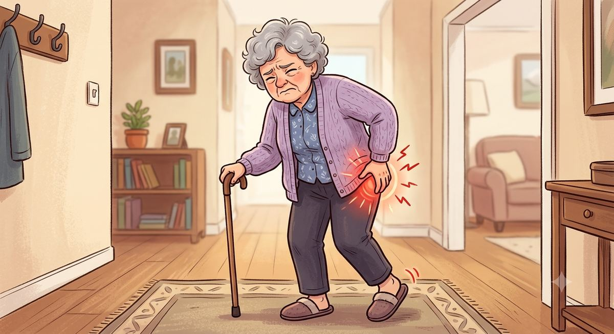

Coxartrose: sintomas, graus e tratamento da artrose do quadril
Coxartrose é o nome médico da artrose do quadril, a principal causa de dor crônica na articulação e o motivo mais comum de prótese. Entenda o que ela é, como reconhecer os sintomas, se tem cura e por que a maioria dos casos começa com tratamento sem cirurgia.
Revisado em 16 de agosto de 2026
O que é coxartrose
A coxartrose, também chamada de artrose do quadril ou osteoartrite do quadril, é o desgaste progressivo da cartilagem que reveste a articulação entre a cabeça do fêmur e o encaixe da bacia (o acetábulo). Essa cartilagem funciona como um revestimento liso e amortecedor; quando ela se desgasta, os ossos passam a atritar, ficam ásperos, formam esporões e a articulação inflama. O resultado é a combinação clássica de dor e rigidez.
É a causa mais comum de dor crônica no quadril em adultos e o principal motivo pelo qual a prótese de quadril é indicada. Um detalhe importante logo de início: receber o diagnóstico de coxartrose não significa que você vá precisar operar. Muitas pessoas convivem bem com a doença por anos, com os sintomas controlados.
Sintomas da coxartrose
O sintoma mais característico e o mais frequentemente mal interpretado é o lugar da dor: a coxartrose costuma doer na virilha, e não na lateral do quadril, porque a articulação fica funda e na frente. Dor sobre a saliência óssea da lateral costuma ser outro problema.
Os sintomas costumam começar devagar e piorar ao longo de meses ou anos. Os mais típicos são:
- dor na virilha, na nádega ou na face lateral do quadril, que pode irradiar para a coxa e, às vezes, até o joelho;
- dor que piora com o uso (caminhar, subir escadas, ficar muito tempo em pé) e melhora com o repouso, pelo menos nas fases iniciais;
- rigidez ao levantar de manhã ou depois de ficar muito tempo sentado, que costuma soltar em alguns minutos;
- perda de movimento, com dificuldade progressiva para calçar meias e sapatos, cortar as unhas dos pés ou cruzar as pernas;
- às vezes, estalos, crepitação ou sensação de travamento;
- nas fases avançadas, dor em repouso e à noite, que atrapalha o sono, e mancar ao andar.

Vale lembrar que nem toda dor nessa região é coxartrose: bursites, tendinites e problemas da coluna também doem por ali. A pista mais útil é o local: a artrose costuma doer na virilha e limitar o movimento, enquanto a bursite e a tendinite doem na lateral do quadril e pioram ao deitar daquele lado. Para um panorama de todas as causas, veja o guia sobre as causas de dor no quadril.
Graus da coxartrose: leve, moderada e avançada
Na prática, é útil pensar na coxartrose em três estágios, que combinam o que o paciente sente com o que aparece na radiografia. A classificação formal em graus é feita pelo médico a partir dos exames, mas o quadro geral costuma ser assim:
- Coxartrose leve: dor esporádica, geralmente depois de esforços maiores, com movimento quase todo preservado. Na radiografia, as alterações são discretas. É a melhor fase para agir com fortalecimento, peso e hábitos.
- Coxartrose moderada: a dor fica mais frequente e passa a aparecer em atividades comuns, a rigidez incomoda mais e alguns movimentos já são limitados. O tratamento conservador segue sendo a base, com medicação nos períodos de crise.
- Coxartrose avançada: dor diária, muitas vezes em repouso e à noite, perda importante de movimento, dificuldade para tarefas básicas e impacto claro na qualidade de vida. É nesse estágio que a prótese de quadril costuma entrar na conversa.
Um ponto que surpreende muita gente: a intensidade da dor nem sempre acompanha a imagem. Há radiografias feias com pouca dor e radiografias razoáveis com dor importante. Por isso a decisão de tratamento é sempre clínica, olhando a pessoa, e não apenas o exame.
Fatores de risco
Entre os fatores que mais aparecem, um merece destaque porque é tratável muito antes de a artrose se instalar: a alteração de formato entre a bola e o encaixe, chamada impacto femoroacetabular, que faz os dois ossos baterem em vez de deslizar e machuca a cartilagem ao longo dos anos.
A coxartrose fica mais comum com a idade, mas ela não é uma simples consequência de envelhecer. Vários fatores aumentam o risco: histórico familiar de artrose, excesso de peso (que multiplica a carga sobre o quadril a cada passo), fraturas ou lesões prévias na articulação, alterações do formato do quadril como o impacto femoroacetabular e a displasia do desenvolvimento, doenças inflamatórias como a artrite reumatoide e a osteonecrose da cabeça femoral. Em parte dos pacientes, especialmente os mais jovens, a coxartrose é a consequência tardia de uma dessas condições de base.
Como é o diagnóstico
O diagnóstico da coxartrose combina três peças: a história do paciente (como a dor começou, o que piora, o que já limitou), o exame físico (que avalia a dor provocada, a marcha e a amplitude de movimento do quadril) e os exames de imagem, sendo a radiografia simples o principal deles, capaz de mostrar a diminuição do espaço articular e as alterações do osso. Em casos selecionados, o médico pode pedir outros exames, como ressonância, para avaliar a cartilagem em fases iniciais ou descartar outras causas. O objetivo é confirmar a coxartrose, estimar a gravidade e afastar diagnósticos que imitam a doença.
Coxartrose tem cura?
Essa é uma das perguntas mais buscadas, e merece uma resposta direta e honesta. O desgaste da cartilagem, uma vez instalado, não se reverte: nesse sentido estrito, a coxartrose não tem cura. Mas isso está longe de significar que não há o que fazer. Os sintomas podem ser controlados por anos com o tratamento conservador, muitas vezes de forma tão eficaz que a cirurgia nunca se torna necessária. E, para os casos avançados em que a dor venceu o tratamento clínico, a prótese de quadril remove a articulação desgastada e resolve a dor na grande maioria dos pacientes, com melhora de qualidade de vida sustentada por anos, como mostram estudos de acompanhamento de longo prazo. Ou seja: a doença não regride, mas a dor tem solução.
Coxartrose é grave? E quando é nos dois lados?
Coxartrose não é uma doença que ameace a vida, e essa é a primeira coisa a dizer para quem acabou de receber o diagnóstico e ficou assustado. Ela não vira câncer, não se espalha e não leva à amputação. O que ela faz é tirar função, e é por aí que a gravidade deve ser medida: pela quantidade de vida que a dor está tomando. Uma coxartrose que aparece no raio X mas não impede nada é um achado; uma coxartrose que faz a pessoa parar de sair de casa, dormir mal e depender de outros para calçar a meia é um problema sério, mesmo que a imagem não pareça tão dramática.
Por isso a pergunta certa no consultório não é “qual o meu grau”, e sim “o que eu deixei de fazer por causa dessa dor”. É essa resposta que orienta a decisão de operar ou não, muito mais do que a radiografia isolada.
Sobre a coxartrose bilateral: é comum, principalmente quando existe uma alteração de formato da articulação que veio de fábrica e que, sendo do indivíduo, vale para os dois lados. Ter nos dois lados não significa que a doença seja mais agressiva, e também não significa que os dois quadris precisarão ser operados ao mesmo tempo. Na prática, opera-se primeiro o lado que mais incomoda, e é frequente que o segundo lado melhore parcialmente depois, porque a marcha se reorganiza e a carga volta a se distribuir. Quando os dois precisam de prótese, as cirurgias costumam ser feitas em tempos separados, com um intervalo definido caso a caso.
Tratamento sem cirurgia
A maioria dos casos de coxartrose começa (e muitos seguem indefinidamente) com o tratamento conservador, que pode aliviar bastante os sintomas:
- Exercício e fisioterapia: fortalecer a musculatura ao redor do quadril e manter a mobilidade são as medidas com melhor evidência. Músculo forte protege articulação.
- Controle do peso: cada quilo a menos reduz a carga sobre o quadril em cada passo; é dos tratamentos mais eficazes e mais subestimados.
- Medicação para dor: analgésicos e anti-inflamatórios ajudam nos períodos de crise, sempre conforme orientação médica.
- Ajuste de atividades: trocar impacto repetitivo (corrida em piso duro, saltos) por opções como bicicleta, natação e musculação orientada, sem cair no erro do repouso total, que enfraquece e piora.
- Bengala quando indicada: usada do lado oposto à dor, reduz a carga sobre o quadril doente e melhora a marcha.
Cada uma dessas medidas tem detalhes que fazem diferença no resultado, além de uma longa lista de tratamentos populares que não têm evidência. Reunimos tudo em um guia prático: como aliviar a dor da artrose no quadril, o que fazer e o que não fazer.
Quando a cirurgia entra
Quando a dor deixa de responder ao tratamento conservador e passa a comprometer o sono, o trabalho e a vida diária, a prótese de quadril costuma ser considerada. É uma das cirurgias de maior sucesso da medicina, com alívio da dor e melhora da qualidade de vida que se mantêm por muitos anos na grande maioria dos operados. A decisão, porém, é sempre individual e tomada em conjunto com o ortopedista, pesando os sintomas, o estágio da doença, a saúde geral e as expectativas de cada pessoa.
Se esse é o seu momento, três leituras deste site ajudam a chegar preparado à consulta: como funciona a prótese de quadril, o que muda na vida de quem opera, segundo um estudo de 5 anos e quanto custa a cirurgia no Brasil, pelo SUS, convênio e particular.
Perguntas frequentes
Perguntas frequentes sobre coxartrose
O que é coxartrose?
É o nome médico da artrose do quadril: o desgaste progressivo da cartilagem da articulação entre o fêmur e a bacia. Coxartrose e artrose de quadril são exatamente a mesma doença.
Quais são os principais sintomas da coxartrose?
Dor na virilha, nádega ou lateral do quadril que piora com o uso, rigidez ao levantar, perda progressiva de movimento (dificuldade para calçar meias, por exemplo) e, nas fases avançadas, dor em repouso e à noite.
Coxartrose tem cura?
O desgaste da cartilagem não se reverte, mas os sintomas podem ser muito bem controlados por anos com tratamento conservador. Nos casos avançados, a prótese de quadril resolve a dor e devolve o movimento.
Toda coxartrose vira prótese?
Não. Muitos pacientes convivem bem com a doença por anos usando fisioterapia, controle de peso e medicação. A cirurgia entra quando isso deixa de funcionar e a dor passa a limitar a vida.
Exercício piora a coxartrose?
Não. O exercício orientado fortalece a musculatura e tende a aliviar os sintomas. O que se ajusta é o tipo de atividade, preferindo as de menor impacto, como bicicleta, natação e musculação.
Qual médico trata a coxartrose?
O ortopedista. Quando o caso caminha para cirurgia, o ideal é um ortopedista especialista em cirurgia do quadril, que domina as técnicas de prótese.
Coxartrose é grave?
Coxartrose não ameaça a vida: não vira câncer, não se espalha e não leva a amputação. O que ela faz é tirar função, e é por aí que a gravidade deve ser medida, pela quantidade de vida que a dor está tomando. Uma coxartrose que aparece no raio X mas não impede nada é apenas um achado. Uma coxartrose que faz a pessoa parar de sair de casa, dormir mal e depender de outros para calçar a meia é um problema sério, mesmo que a imagem não pareça dramática. Por isso a pergunta mais útil no consultório não é qual o meu grau, e sim o que eu deixei de fazer por causa dessa dor.
Coxartrose bilateral tem cura? Preciso operar os dois lados?
A coxartrose bilateral segue a mesma regra da unilateral: o desgaste da cartilagem não se reverte, mas a dor tem solução. Ter nos dois lados é comum, em geral porque existe uma alteração de formato da articulação que é do indivíduo e vale para os dois lados, e não significa que a doença seja mais agressiva. Também não significa que os dois quadris precisarão de cirurgia ao mesmo tempo. Na prática, opera-se primeiro o lado que mais incomoda, e é frequente que o segundo melhore parcialmente depois, porque a marcha se reorganiza. Quando os dois precisam de prótese, as cirurgias costumam ser feitas em tempos separados, com intervalo definido caso a caso.
Em resumo
- Coxartrose é o nome médico da artrose do quadril: o desgaste da cartilagem da articulação.
- Os sintomas típicos são dor na virilha que piora com o uso, rigidez e perda de movimento.
- Pensar em três estágios ajuda: leve, moderada e avançada, combinando sintomas e radiografia.
- O desgaste não se reverte, mas os sintomas têm controle; nesse sentido, a dor tem solução.
- A maioria dos casos é tratada sem cirurgia, com fisioterapia, peso e medicação.
- A prótese entra nos casos avançados, quando o tratamento conservador não resolve mais.
Referências
- Shan L, et al. Total hip replacement: systematic review and meta-analysis on mid-term quality of life. Osteoarthritis and Cartilage. 2014.
- Mariconda M, et al. Quality of life and functionality after total hip arthroplasty. BMC Musculoskeletal Disorders. 2011.
- Neuprez A, et al. Total joint replacement improves pain, functional quality of life, and health utilities in patients with late-stage knee and hip osteoarthritis for up to 5 years. Clinical Rheumatology. 2020.
Cirurgiões de quadril em Curitiba
Procurando um cirurgião de quadril?
Este site é informativo e mantém, gratuitamente, um espaço de indicação de cirurgiões de quadril em Curitiba. É um profissional que cuida da articulação e quer aparecer aqui? Escreva para curitibaquadril@gmail.com.
Prefere abrir direto? Escrever pelo Gmail ou usar o app de e-mail.
Indicação gratuita e sem fins comerciais. Cada profissional é responsável pela própria publicidade perante o CFM.